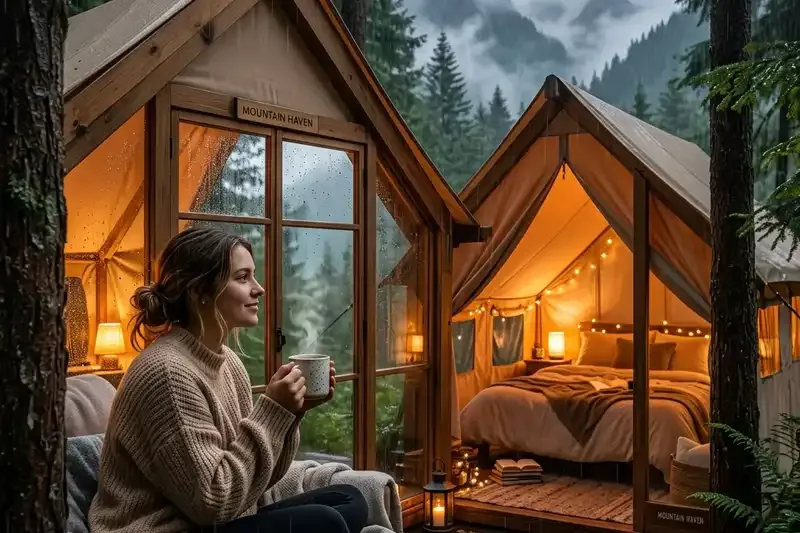

Menuju Kawah Ijen memerlukan perencanaan rute yang matang karena pos awal pendakian, Pos Paltuding, terletak di kawasan pegunungan di antara Kabupaten Banyuwangi dan Kabupaten Bondowoso. Jalur yang tepat memengaruhi kenyamanan dan ketepatan waktu sampai lokasi.
Ringkasan Inti
- Rute Banyuwangi adalah jalur paling populer karena jarak ke Pos Paltuding lebih pendek dan akses kendaraan lebih mudah.
- Rute Bondowoso menawarkan pemandangan perkebunan kopi dan kawasan hutan yang rindang, meski jalurnya lebih panjang.
- Pos Paltuding merupakan titik awal pendakian resmi Kawah Ijen yang dilengkapi area parkir dan fasilitas dasar.
- Perjalanan dari Surabaya atau Malang membutuhkan waktu 6–8 jam perjalanan darat sebelum mencapai gerbang pendakian.
- Menyiapkan transportasi yang andal sangat krusial mengingat pendakian dimulai dini hari.
1. Bagaimana Rute dari Banyuwangi Menuju Kawah Ijen?
Rute dari Banyuwangi merupakan jalur yang paling sering dipilih oleh wisatawan lokal maupun internasional. Dari pusat kota Banyuwangi, Anda dapat berkendara mengarah ke Kecamatan Licin lalu meneruskan perjalanan ke Desa Jambu hingga mencapai Pos Paltuding.
Jarak tempuh dari kota Banyuwangi ke Pos Paltuding sekitar 35 km dengan waktu tempuh kurang lebih 1 hingga 1,5 jam perjalanan. Kondisi jalan sudah berupa aspal mulus namun memiliki tanjakan yang cukup curam, sehingga kendaraan pribadi maupun mobil sewaan harus dalam kondisi prima.
2. Bagaimana Rute dari Bondowoso Menuju Kawah Ijen?
Jika berangkat dari arah Bondowoso, rute melintasi kawasan Wonosari, Sukosari, hingga menuju Sempol (Kecamatan Ijen). Rute ini menawarkan panorama perkebunan kopi Arabika yang luas serta hawa pegunungan yang sangat sejuk.
Jarak rute Bondowoso ke Pos Paltuding relatif lebih jauh dibanding dari Banyuwangi, yaitu sekitar 64 km dengan waktu tempuh sekitar 2 hingga 2,5 jam. Namun, jalur ini relatif memiliki tanjakan yang lebih landai dan pemandangan pedesaan yang indah.

3. Transportasi Apa Saja yang Tersedia Menuju Pos Paltuding?
Terdapat beberapa modalitas transportasi yang dapat dipilih pengunjung untuk mencapai Pos Paltuding:
- Kendaraan Pribadi / Mobil Sewa: Pilihan paling fleksibel untuk perjalanan malam hari. Disarankan memakai kendaraan dengan sistem rem dan mesin yang baik.
- Kereta Api: Berhenti di Stasiun Banyuwangi Kota (Karangasem) atau Stasiun Ketapang, lalu melanjutkan perjalanan menggunakan jasa travel atau sewa mobil/motor.
- Ojek Online / Sepeda Motor: Penyewaan motor banyak tersedia di pusat kota Banyuwangi dengan tarif hemat untuk traveler solo.
- Paket Tur Travel / Open Trip: Menyediakan transportasi antar-jemput dari hotel di Banyuwangi atau gerbang kedatangan.
4. Apa yang Perlu Diperhatikan Saat Menempuh Rute Malam Hari?
Karena perjalanan ke Pos Paltuding biasanya dilakukan antara pukul 00.00 hingga 01.30 WIB agar tiba sebelum pendakian dibuka, terdapat beberapa hal penting yang wajib diperhatikan:
- Penerangan Jalan: Beberapa titik jalan pegunungan minim lampu penerangan jalan umum, pastikan lampu utama kendaraan berfungsi sempurna.
- Kabut dan Udara Dingin: Gunakan kaca mobil bersih dan hindari berkendara terlalu cepat saat melewati area berembun tebal.
- Bahan Bakar: Isi penuh bahan bakar di SPBU pusat kota sebelum naik ke pegunungan karena tidak ada SPBU besar di Pos Paltuding.